Travelled December 2015Published November 2026
Portugal
from the Douro to Cabo da Roca
Photos from Portugal in December 2015: Porto, Aveiro and Lisbon, then out past Cascais to Cabo da Roca. In from Santiago de Compostela; the last stop on the overland leg from Singapore.
- Stops
- 4
- Route
- Porto · Aveiro · Lisbon · Cabo da Roca
- Photographs
- Shaun Ji-Thompson
The route
Dot map of Portugal and western Spain, with the border. Lisbon is marked as the capital. A faint line comes down from Santiago de Compostela in Galicia to Porto; the route runs south along the coast to Aveiro, on to Lisbon, then west past Cascais to Cabo da Roca. Nazaré is marked on the coast between Aveiro and Lisbon.
Porto
Map ↑
Porto, on the Douro near its mouth, the first stop after crossing from Galicia. Houses stack up the hill from the Ribeira; São Bento station is in the centre.
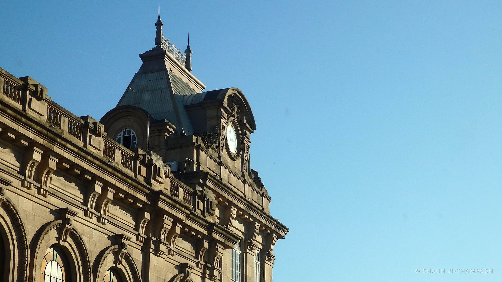
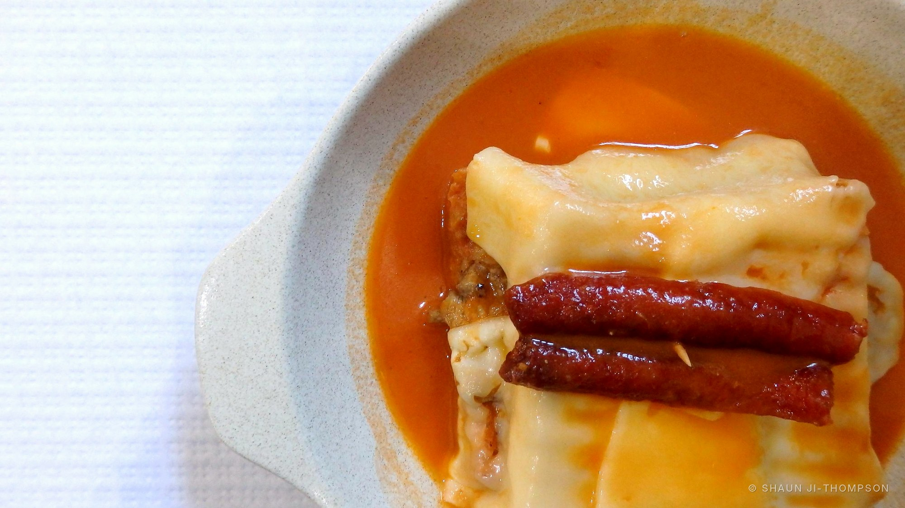
Aveiro
Map ↑
Aveiro, on the lagoon of the Ria de Aveiro. Canals through the centre with painted moliceiro boats, once used to gather seaweed; Art Nouveau fronts along the main canal; salt marsh at the edge of town.
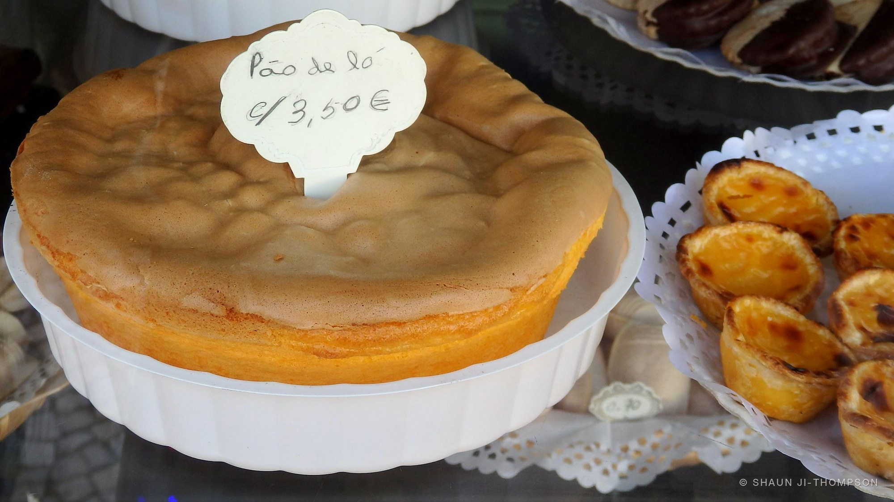
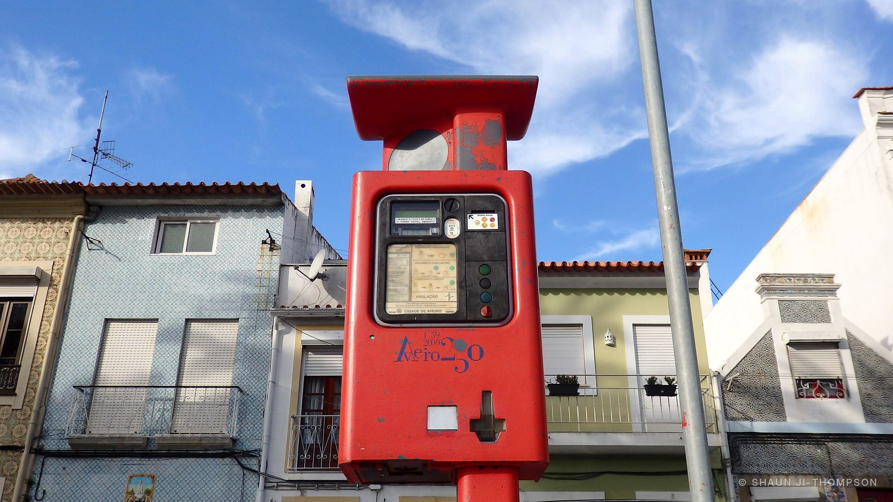
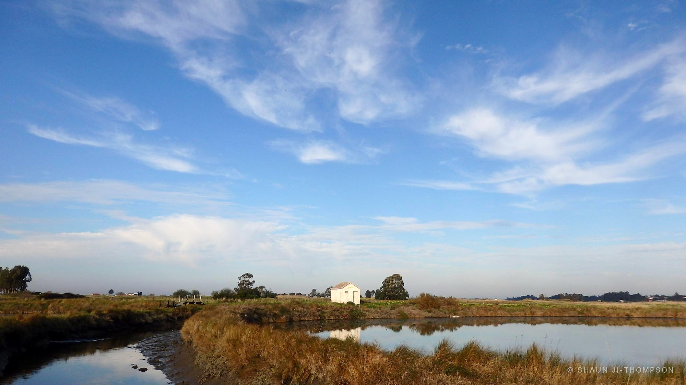
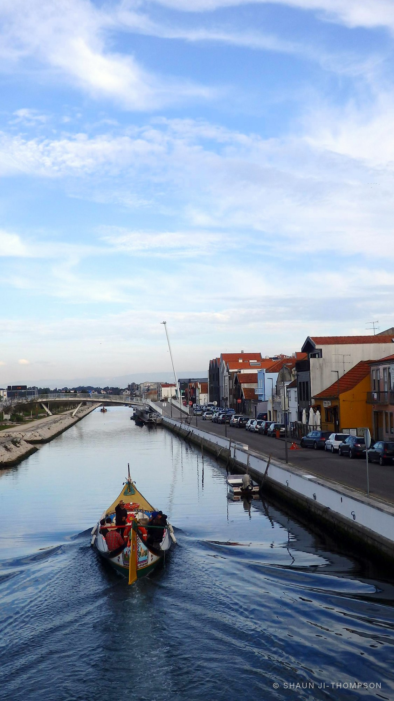
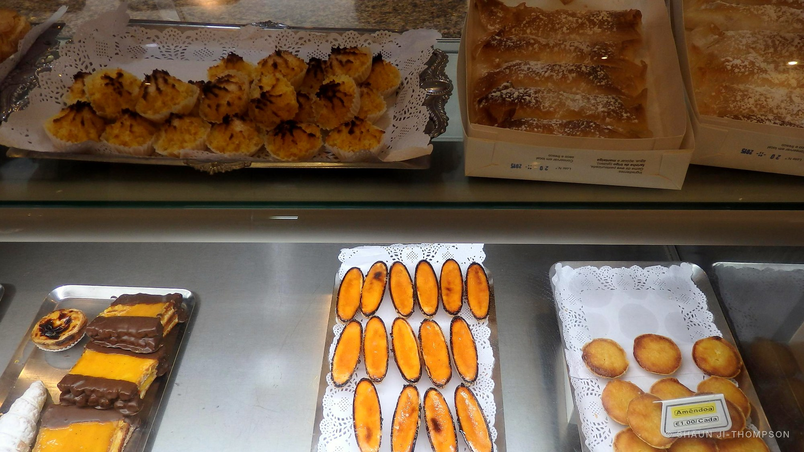
Lisbon
Map ↑
Lisbon, at the mouth of the Tagus and the end of the road west. Tiled fronts and trams in the old town; downriver at Belém, the tower and the Monument to the Discoveries face the Atlantic.
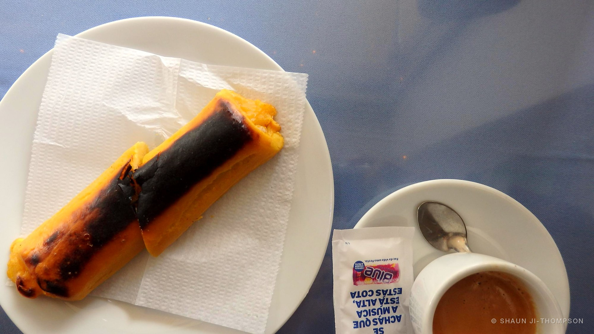
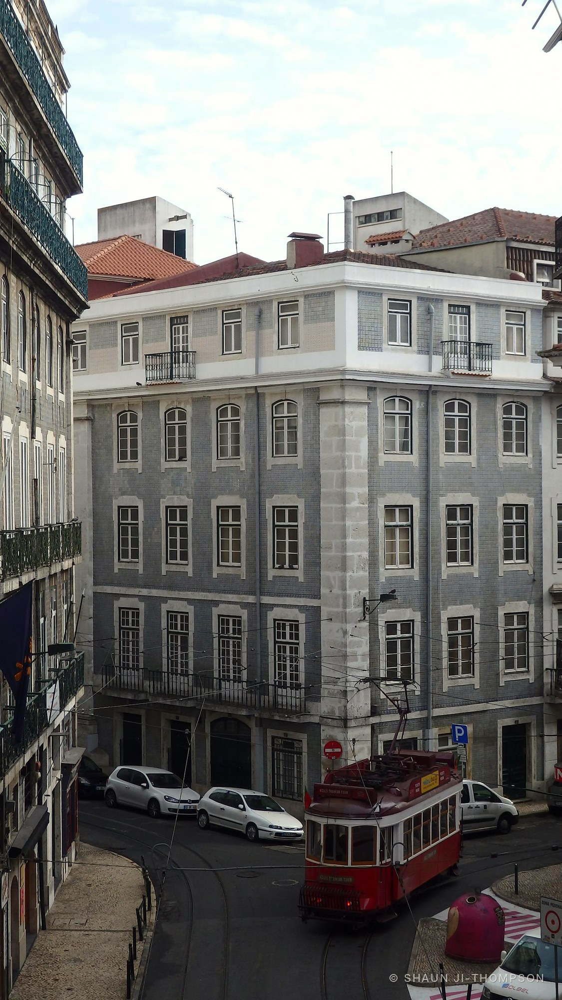
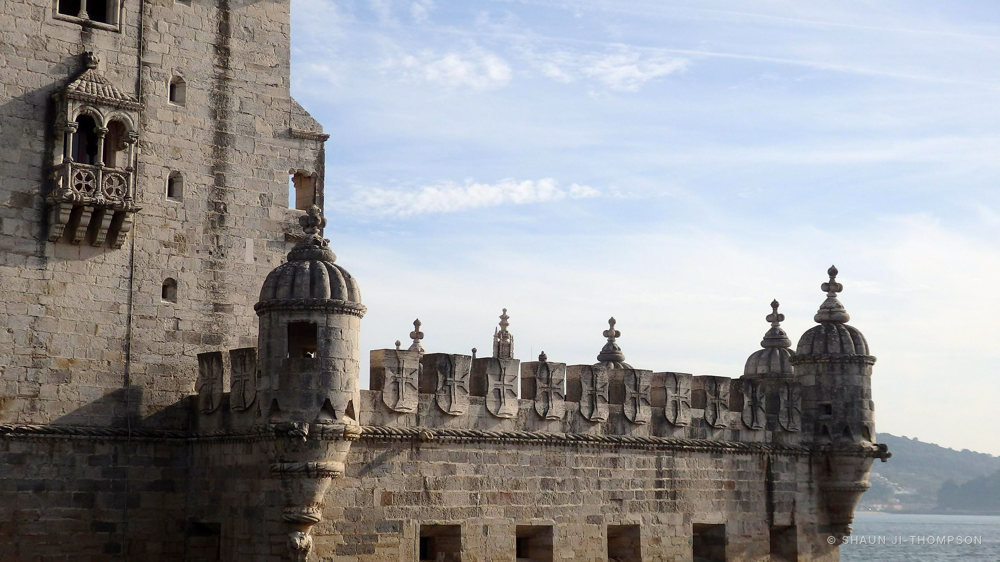
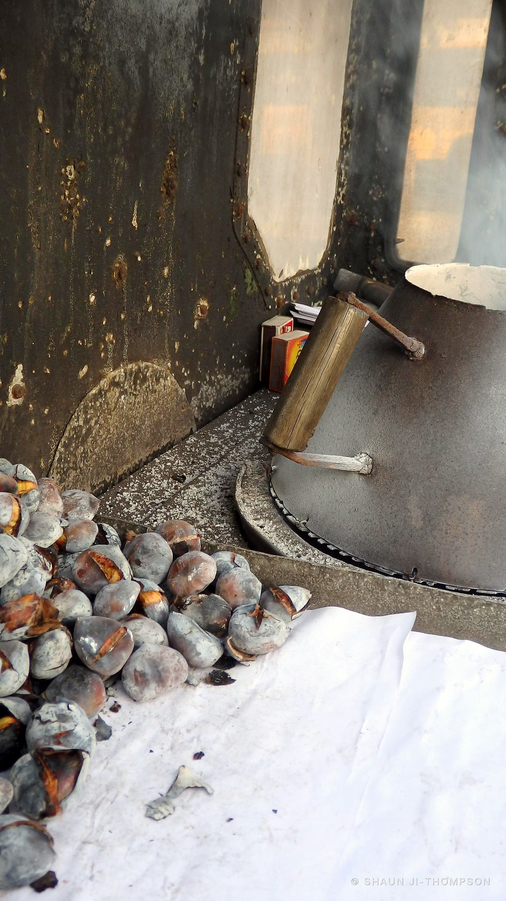
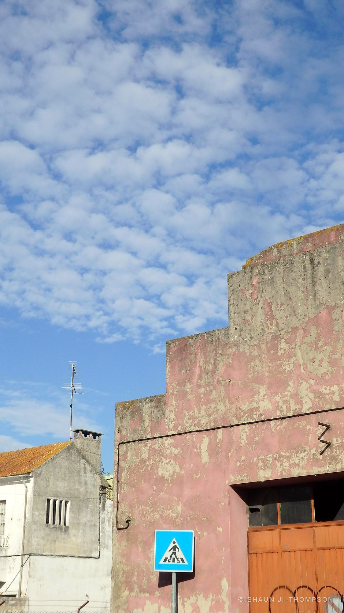
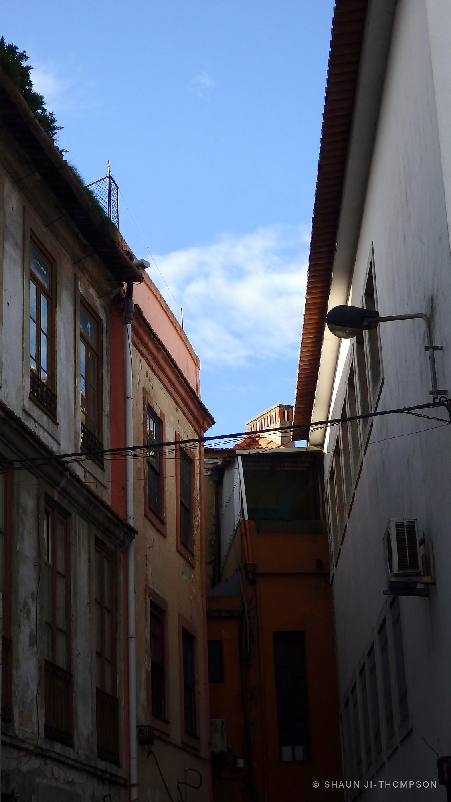
Cabo da Roca
Map ↑
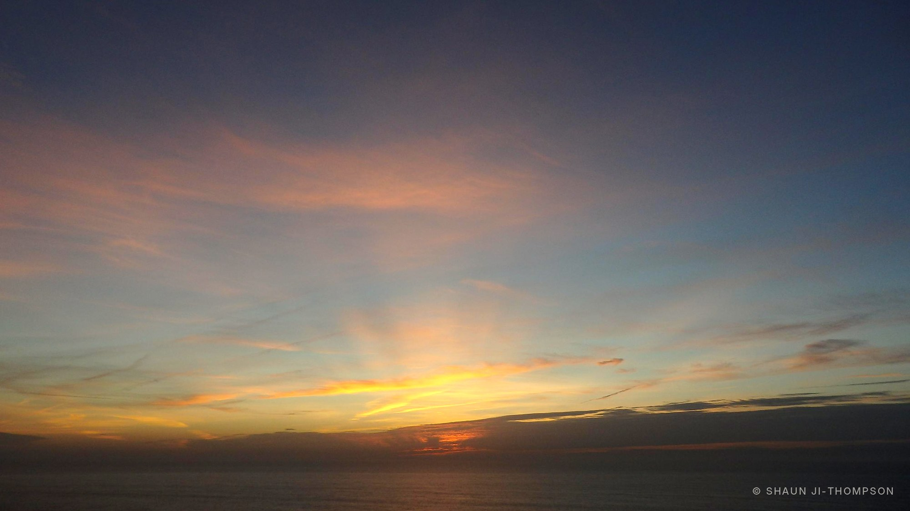
Cabo da Roca, out past Cascais, the westernmost point of mainland Europe. The monument carries Camões’s line «Onde a terra se acaba e o mar começa».
The score · Shaun Ji-Thompson · 2026
O Mar Novo: «As Vagas de Nazaré»
For wind band, on the great Atlantic winter waves that break off Nazaré, on this coast between Aveiro and Lisbon.
What did you think?
A reaction, a correction, a place I should go next. I read every note.